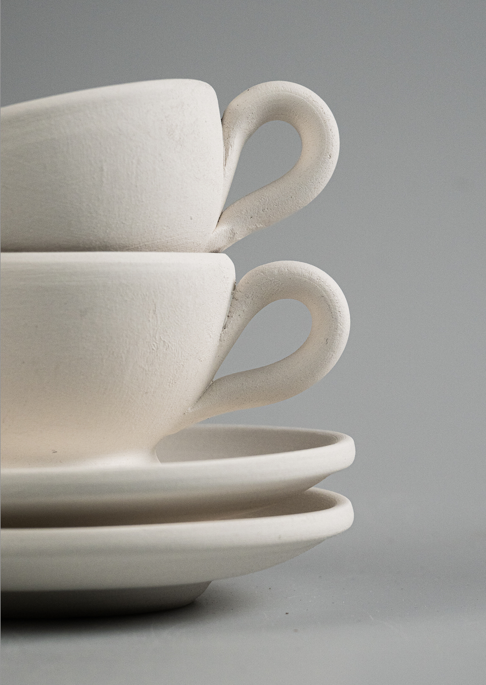
LAURA AMALIES PORTFOLIO
Multimediedesign studerende i Odense, med passion for digital branding og produktion af content
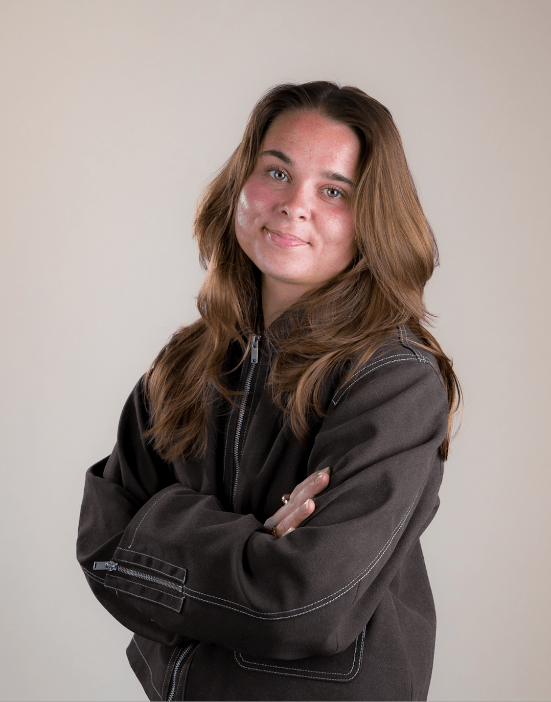
Portfolio
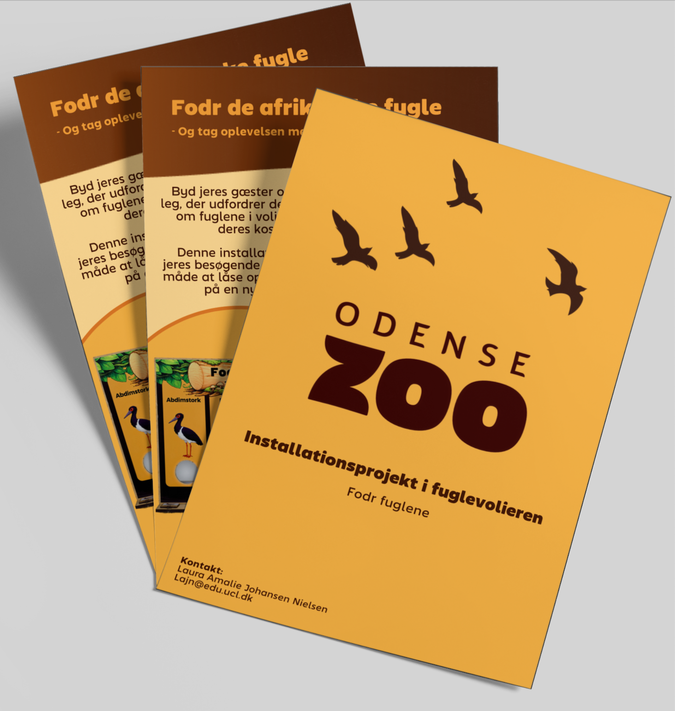
Design til installationsprojekt for Odense Zoo
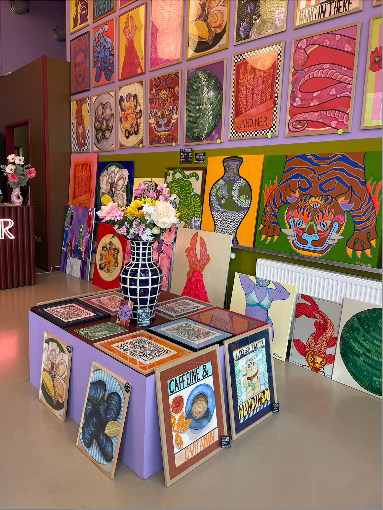
Content for Cafe Kunstnær
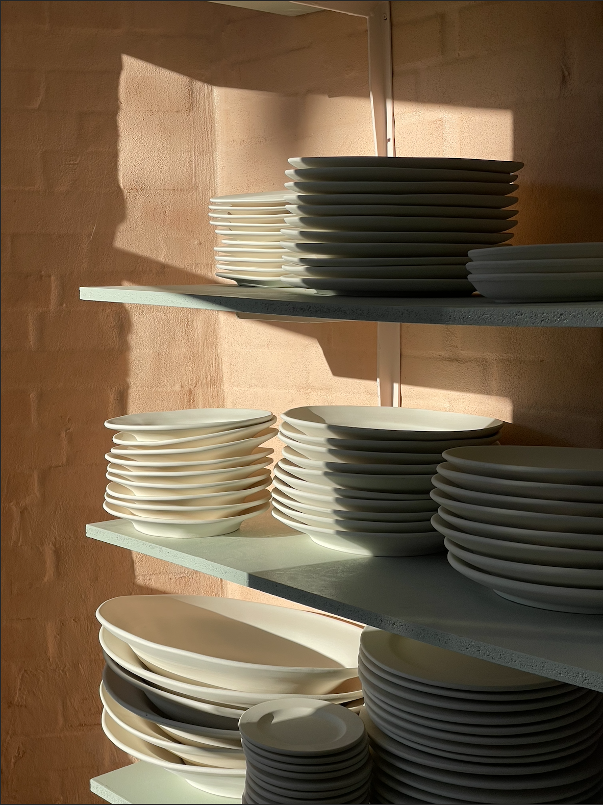
Content for Creative Space
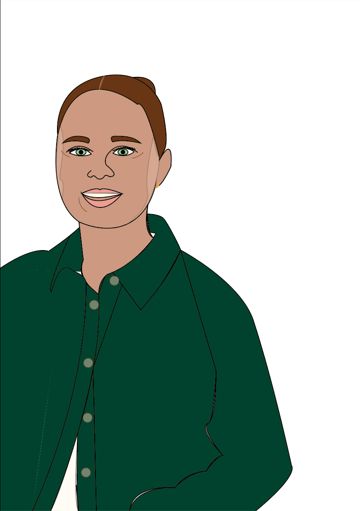
Pentool portrait
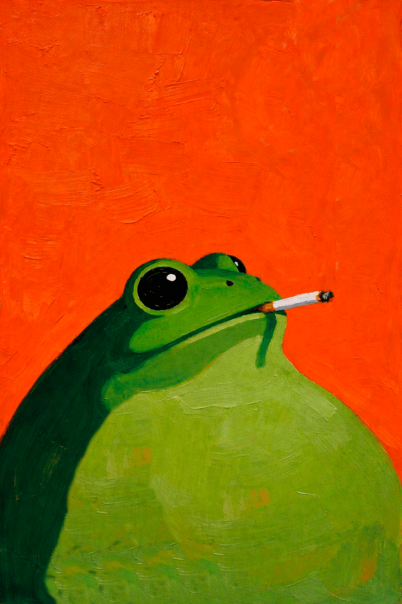
Moving art
Tilbage til portfolio
Produktbilleder
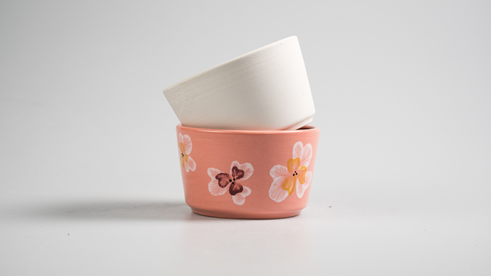
I løbet af 1. semester har vi arbejdet med fotografering, hvor vi har haft fokus på portrætbilleder og særligt produktbilleder. Her har jeg erfaret mig en masse viden om lys, indstilling af kamera, komposition og vinkler. Jeg har endvidere også opbygget erfaring indenfor billedredigering i Adobe Photoshop og Adobe Lightroom.
Tilegnet erfaring: Kameraindstilling, lys, billederedigering
Tilbage til portfolio
Odense Zoo projekt
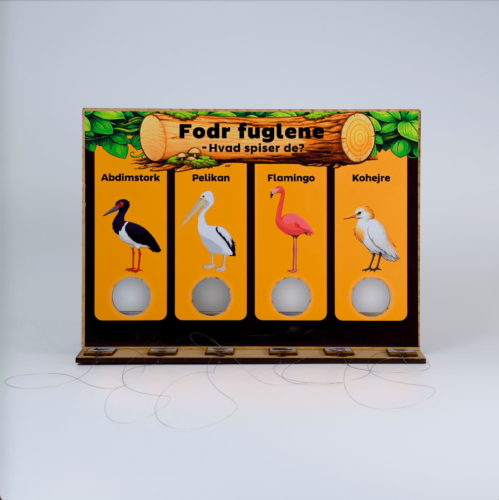
På første semester har vi haft en projekt, i samarbejde med Odense Zoo, hvor vores opgave var, at designe og udvikle et interaktivt installationsprojekt i den afrikanske fuglevoliere.
Installationen skulle kunne formidle information omkring dyrene, trække opmærksomhed samt give de besøgende noget information, som de evt kunne tage med hjem, og bruge i hverdagen, for at forlænge oplevelsen.
Min studiegruppe og jeg lavede et koncept hvor man via spil og leg, skulle lære fuglenes spisevaner at kende. Her udviklede vi i fællesskab ideen, men jeg var primære torvholder på at skitsere, designe prototype, det endelige produkt og designe flyeren, som skulle formidle information om vores koncept, til folkene fra Odense Zoo.
Tilegnet erfaring: Grafisk design, designe low-fi og hi-fi prototype, designe flyer, skabe et koncept
Tilbage til portfolio
Content for Cafe Kunstnær
Ved siden af mit studie har jeg tilbudt min frivillige hjælp til den nyopstartede Café Kunstnær. Cafeen kombinerer den traditionelle caféoplevelse med flere forskellige kreative aktiviteter og projekter for gæsterne. Her har jeg bidraget med idéudvikling, konceptarbejde og produktion af digitalt content med fokus på at styrke caféens digitale identitet, øge kendskabet til cafeen blandt målgruppen og inspirere gæsterne til at turde være kreative.
Tilegnet erfaring: Skyde content, billederedigering, videoredigering
Tilbage til portfolio
Content for Creative Space
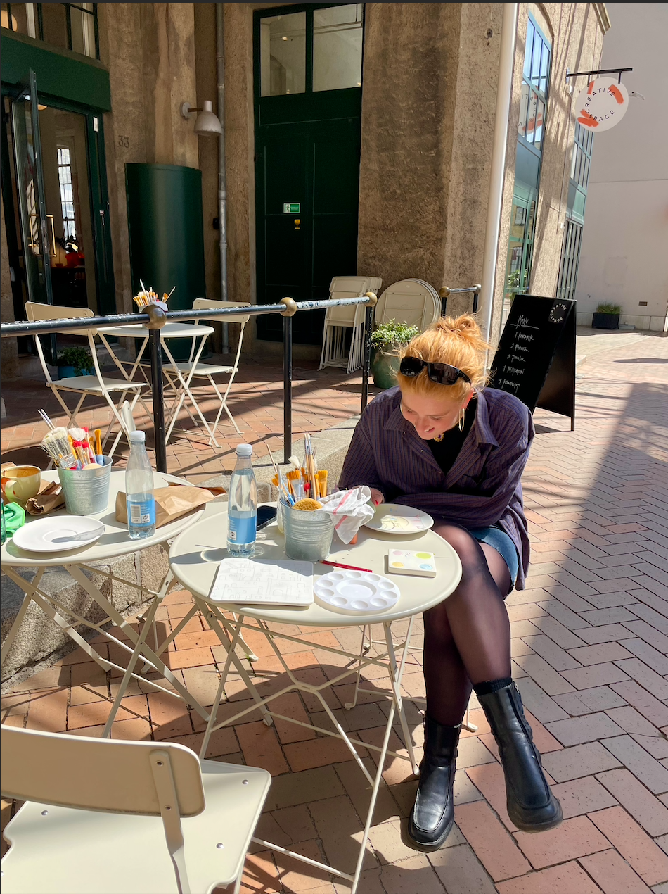
Creative Space er en kreamik cafe, hvor man kan kombinere den traditionelle cafeoplvelse, med at male på keramik. Jeg har arbejdet som butiksansat i flere år, men sideløbende med dette, har jeg hjulpet virksomheden med at tage produktbilleder, og andet content til deres sociale medier, og hjemmeside, for at øge interessen og inspirere gæster til at komme og være kreative, uanset erfaring, alder og interesser.
Tilegnet erfaring: Fotografering, opfgange stemning, vinkler og billederedigering
Tilbage til portfolio
Pentool portrait
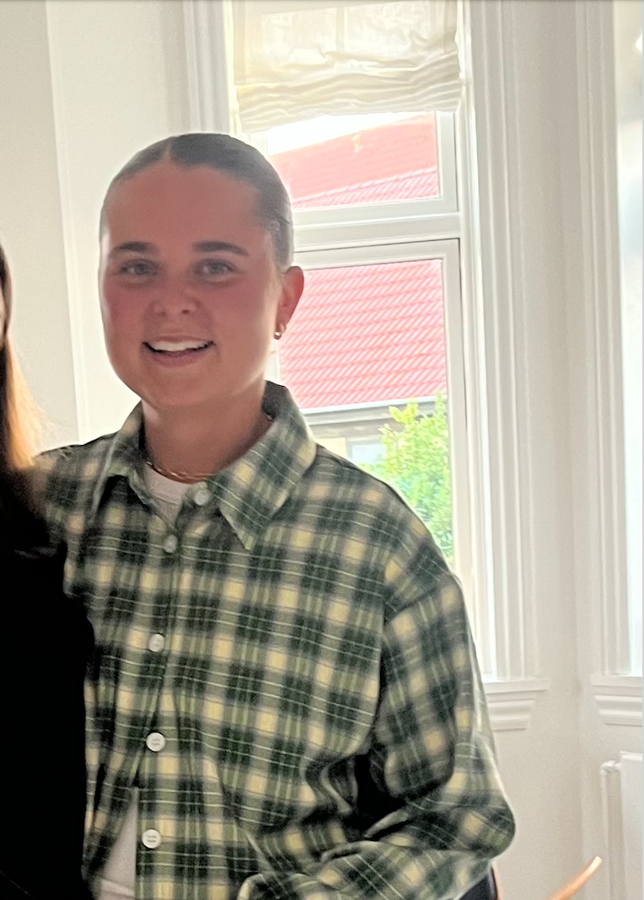
I forbindelse med 1. semester arbejdede vi med Pentool i Adobe Illustrator, hvor vi fik en frivillig hjemmeopgave. Opgaven bestod i at skabe et selvportræt ud fra et fotografi ved hjælp af vektortegning og præcisionsarbejde i Illustrator.
Projektet gav mig mulighed for at udvikle mine kreative evner inden for visuel identitet, detaljearbejde og produktion af unikt digitalt indhold. Samtidig styrkede det min forståelse for, hvordan illustration og grafiske virkemidler kan bruges til at skabe et personligt og iøjnefaldende visuelt udtryk.
Tilegnet erfaring: Kreativ formidling, kreative evner, produktion af unikt og anderledes indhold
Tilbage til portfolio
Moving art
I forbindelse med workshoppen Moving Art & Animation arbejdede vi med at vække et valgfrit maleri til live gennem animation og visuel storytelling. Formålet var at bruge egen kreativitet og fortolkning til at skabe bevægelse, stemning og narrativ i et ellers stillestående værk.
Workshoppen gav mig indsigt i, hvordan animation og moving art kan bruges som et stærkt visuelt kommunikationsværktøj i contentproduktion. Ved at kombinere billeder, bevægelse og fortælling kan man skabe mere engagerende og stemningsfuldt indhold, der fanger modtagerens opmærksomhed og styrker den følelsesmæssige forbindelse til et brand.
I relation til caféer har moving art særligt potentiale, fordi caféoplevelser ofte handler om atmosfære, mennesker og små fortællinger i hverdagen. Animeret content kan derfor bruges til at formidle stemning, identitet og kreativitet på en mere levende og sanselig måde, hvilket kan styrke caféens visuelle udtryk og skabe større interesse på digitale platforme som Instagram og TikTok.
Tilegnet erfaring: Storytelling, unikt og anderledes indhold, kreativ formidling
Lær mig at kende
Mit navn er Laura Amalie Johansen Nielsen. Jeg er en 24 år gammel og læser multimediedesign, på UCL, i Odense.
Jeg har en stor interesse i forretningsudvikling, digital branding, produktion af digitalt indhold og design, og jeg motiveres af at se ideer forme sig til koncepter, projekter og flotte resultater.
Min nysgerrighed og mit detaljeorienterede mindset, gør at jeg stræber efter at skabe resultater der ikke kun er gode nok.
Som multimediedesignstuderende kan jeg hjælpe jer med at skabe en klar og genkendelig brandidentitet med visuelt stærkt indhold, samt bidrage til at skabe en strategi der kombinerer design og forretning.
Jeg har et stort engagement i mennesker og fællesskaber, hvilket gør at jeg sætter stor pris på godt samarbejde, men jeg har også et drive der får det, at gå forrest, til at føles meget naturligt.
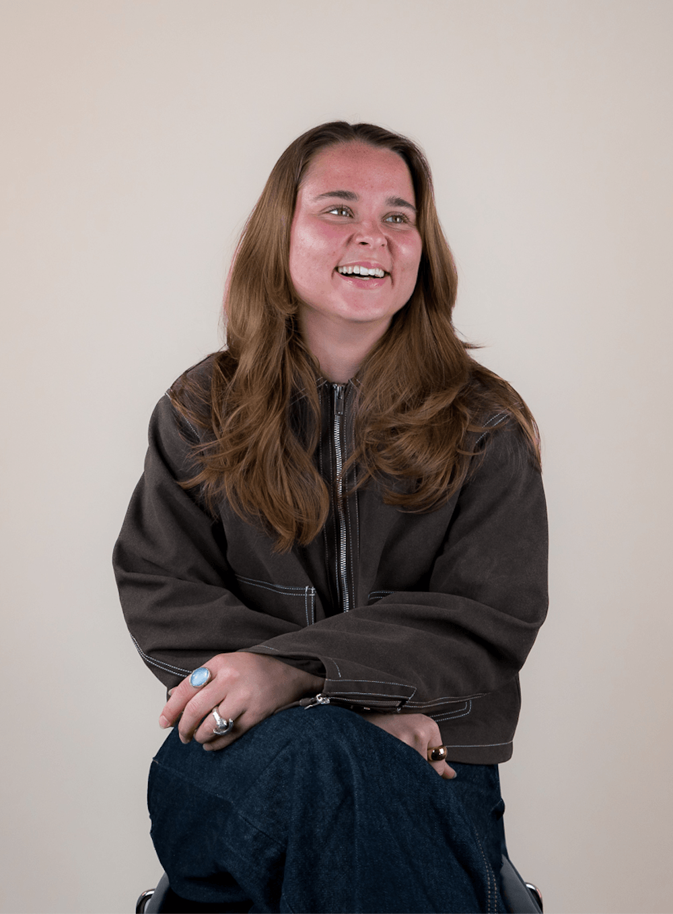
Kontakt mig
Hvis I søger en struktureret person, der kombinerer kreativitet, digital forståelse og et stærkt drive, så er I meget velkomne til at kontakte mig til en uforpligtende samtale eller med spørgsmål. Jeg brænder for at skabe løsninger, der gør en forskel – både visuelt og strategisk.